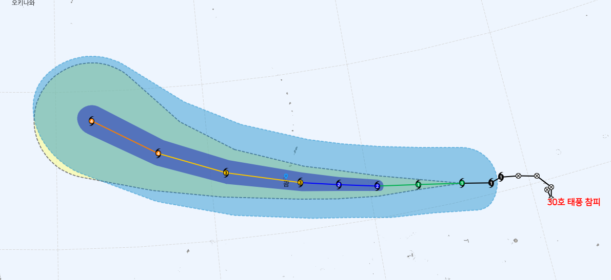
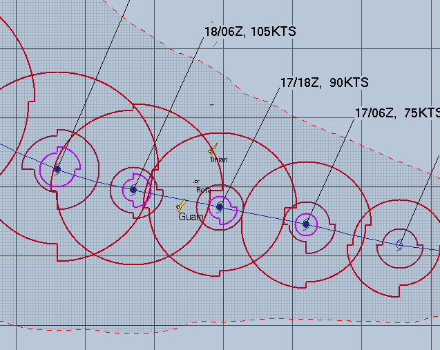
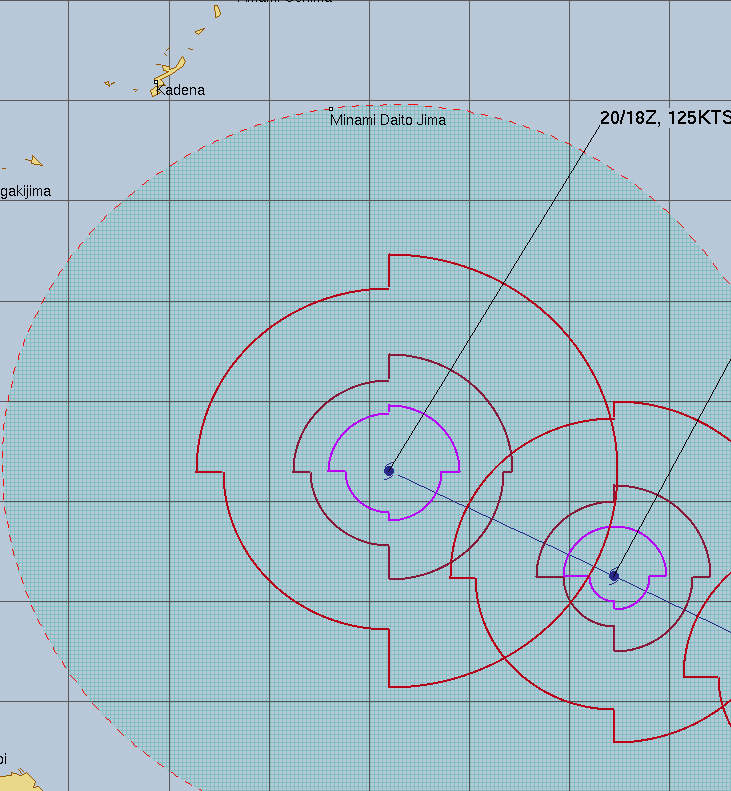
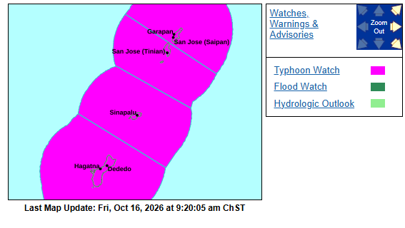
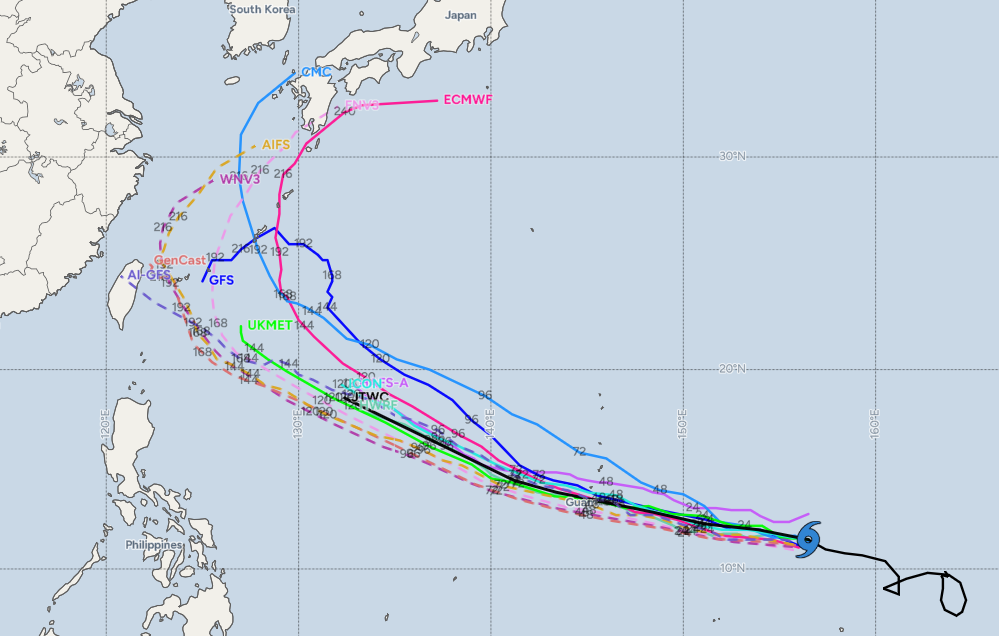
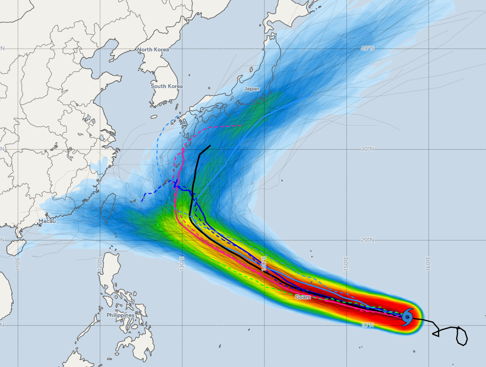
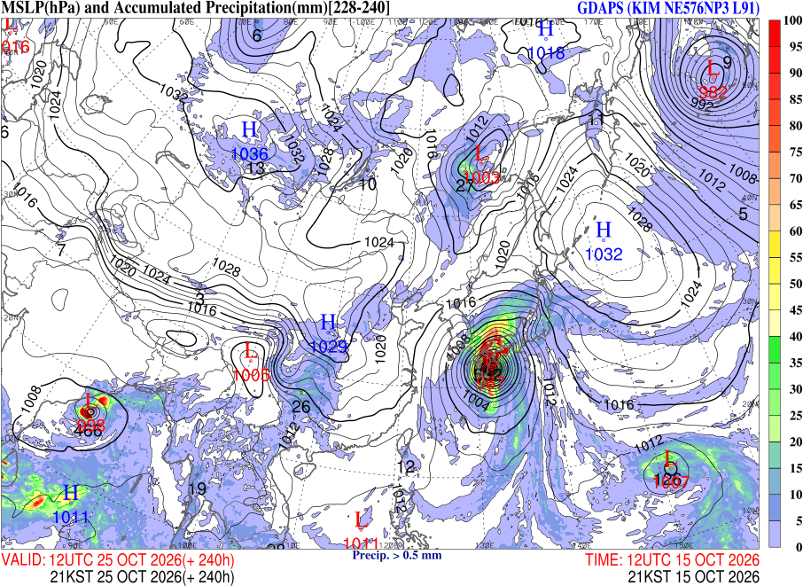

JTWC 30호 태풍 참피 120시간 예상 경로도 중 일부
일단 17~18일쯤 괌과 사이판 일대가 두들겨 맞고, 다음주 후반(목~토) 무렵에는 오키나와가 태풍 영향권에 들어설 것으로 보임

괌, 사이판, 티니언, 로타 일대에 태풍 주의보(48시간 이내 태풍 직접 영향 예상) 발령
30호 태풍 참피 모델별 예상 경로 스파게티 차트

예상 진로가 조금씩 더 서쪽으로 쏠리는 추세가 나오기 시작
일단 메이저급인 ECMWF는 규슈 남쪽, 캐나다 CMC는 규슈 북쪽 쓰시마 해협쪽을 찍고 있으며, 한국 기상청 KIM도 규슈 남쪽 상륙을 예상하고 있어 이쪽 예상대로라면 10월 말 우리나라쪽도 직간접 영향권에 들어올 가능성이 엿보임(10일 범위에서 제주 남쪽 해상 풍랑/태풍 특보 발령 가능성 보임)

앙상블 모델 예측은 일본이 정배, 그 다음이 대만이 가능성 높은 지역으로 나옴

한국기상청 KIM은 10월 12일 21시 기준 240시간 예측에서 태풍 참피가 일본 규슈 상륙 후 동해상 진출하여 다음주 주말 무렵 울릉도쪽과 동해안쪽에 태풍특보 발령 가능성을 시사하고 있음(현실화되면 동해안은 지형성 강수와 풍랑, 강한 너울성 파도 등이 발생)
이 경우 영남지역 가뭄 해갈에 일정부분 기여할 가능성이 생길 수도 있음
태풍 이름이 어떻게 참피 ㅋㅋㅋㅋ